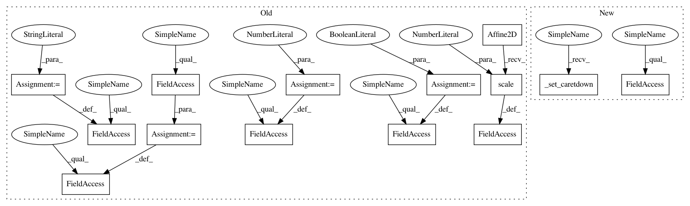

8f86eb62846828e0329ff3a4a2b0adb3a635438e,lib/matplotlib/markers.py,MarkerStyle,_set_caretright,#MarkerStyle#,776
Before Change
self._joinstyle = "miter"
def _set_caretright(self):
self._transform = Affine2D().scale(0.5).rotate_deg(90)
self._snap_threshold = 3.0
self._filled = False
self._path = self._caret_path
self._joinstyle = "miter"
_caret_path_base = Path([[-1.0, 0.0], [0.0, -1.5], [1.0, 0]])
def _set_caretdownbase(self):
After Change
self._transform = self._transform.rotate_deg(270)
def _set_caretright(self):
self._set_caretdown()
self._transform = self._transform.rotate_deg(90)
_caret_path_base = Path([[-1.0, 0.0], [0.0, -1.5], [1.0, 0]])
In pattern: SUPERPATTERN
Frequency: 3
Non-data size: 14
Instances
Project Name: matplotlib/matplotlib
Commit Name: 8f86eb62846828e0329ff3a4a2b0adb3a635438e
Time: 2017-03-13
Author: sindunuragarp@gmail.com
File Name: lib/matplotlib/markers.py
Class Name: MarkerStyle
Method Name: _set_caretright
Project Name: matplotlib/matplotlib
Commit Name: 8f86eb62846828e0329ff3a4a2b0adb3a635438e
Time: 2017-03-13
Author: sindunuragarp@gmail.com
File Name: lib/matplotlib/markers.py
Class Name: MarkerStyle
Method Name: _set_caretup
Project Name: matplotlib/matplotlib
Commit Name: 8f86eb62846828e0329ff3a4a2b0adb3a635438e
Time: 2017-03-13
Author: sindunuragarp@gmail.com
File Name: lib/matplotlib/markers.py
Class Name: MarkerStyle
Method Name: _set_caretright
Project Name: matplotlib/matplotlib
Commit Name: 8f86eb62846828e0329ff3a4a2b0adb3a635438e
Time: 2017-03-13
Author: sindunuragarp@gmail.com
File Name: lib/matplotlib/markers.py
Class Name: MarkerStyle
Method Name: _set_caretleft